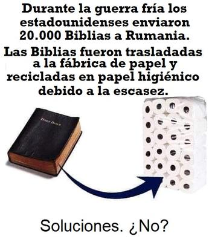

Pues, resulta que eso ya ocurrió al menos una vez, en Rumania. En plena Guerra Fría, mientras Washington y Moscú se disputaban el planeta en nombre de sistemas ideológicos supuestamente redentores, ocurrió un episodio realmente insólito: unas 20.000 Biblias enviadas a ese país terminaron siendo usadas en el retrete.


Se trata de una historia documentada en archivos y debates políticos de la época, y que fue recogida años después por la prensa internacional. No es un mito urbano ni una sátira antirreligiosa: es un raro pero elocuente capítulo del choque entre la fe y la miseria material.
Durante el régimen de Nicolae Ceaușescu, último líder comunista de Rumania —quien gobernó entre 1974 y 1989— el país era oficialmente un Estado ateo marxista-leninista. Y aunque la religión no estaba prohibida de forma absoluta, sí era estrictamente vigilada y limitada. En ese contexto, imprimir Biblias era complicado, distribuirlas era muy difícil, y cualquier actividad religiosa independiente del control estatal era considerada sospechosa.
A la vez, el país sufría una crisis económica severa. En los años 80, los ciudadanos enfrentaban racionamientos de alimentos, cortes eléctricos constantes, y una escasez humillante de productos básicos. Entre ellos, algo tan elemental como el papel higiénico.
Fue entonces cuando desde Estados Unidos se envió un lote de aproximadamente 20.000 Biblias, en lo que pretendía ser un gesto de apoyo a los creyentes rumanos, pero de paso, una forma de incomodar diplomáticamente al régimen comunista. Sin embargo, las Biblias no circularon libremente entre los emocionados creyentes, sino que, según los documentos y denuncias de la época, fueron confiscadas y desviadas por las autoridades. De tal manera que, en lugar de «alimentar espiritualmente» a la población, el papel terminó en el circuito industrial… convertido en papel sanitario. La ironía histórica es difícil de superar: un texto que miles de millones consideran la «Palabra de Dios», terminó cumpliendo una función estrictamente fisiológica (y por supuesto, práctica).
Pero, ¿cómo pudo una sociedad mayoritariamente creyente, permitir algo así sin sentir que cometía un pecado gravísimo? —La respuesta es más humana que teológica: cuando escasean los bienes básicos, la supervivencia tiende a imponerse sobre «lo sagrado». De modo que la Biblia puede ser «santa» en el plano doctrinal, pero sigue siendo papel en el plano material. Y en un contexto donde conseguir productos de higiene era una odisea, el valor práctico superó al valor simbólico.
Además, es importante subrayar que no fueron necesariamente «cristianos devotos» quienes tomaron la decisión consciente de usar de esa forma tan indecorosa las «sagradas» páginas; el proceso pasó por el aparato estatal y la industria. Y una vez transformado el libro en rollos anónimos, la carga simbólica quedó diluida. Nadie tenía delante un volumen impreso que tuviera que profanar con culpa; tenía un producto básico necesario en un país con carencias crónicas.
Este episodio sin embargo, revela algo interesante sobre las religiones: el carácter sagrado de un objeto depende del consenso cultural y de las circunstancias. En sociedades estables y prósperas, destruir una Biblia puede considerarse una escandalosa blasfemia, mientras que en un contexto de escasez extrema, puede convertirse en materia prima. El mismo libro que en ciertos lugares se besa, se entroniza o se exhibe como símbolo identitario, en otro contexto terminó absorbido por la lógica industrial.
Si bien es cierto que no es la primera vez que textos religiosos han sido quemados, prohibidos o reciclados por circunstancias históricas, el caso rumano destaca por su dimensión un tanto surrealista: una guerra ideológica global que terminó produciendo un episodio donde la teología fue reducida a celulosa.
Pero este evento tan poco conocido nos deja una lección interesante: no se trató de un caso de falsa fe de aquellos creyentes, ni de que hayan sido unos hipócritas. Se trató de algo más prosaico: las necesidades materiales suelen pesar más que los dogmas cuando la realidad aprieta.
La Guerra Fría produjo misiles nucleares, muros, espionaje y propaganda masiva. Pero dejó también pequeñas y paradójicas anécdotas como ésta: un envío de material religioso convertido en solución sanitaria. Tal vez ahí reside la lección más irónica de todas: cuando la política instrumentaliza la religión y la religión se convierte en herramienta geopolítica, el resultado puede ser tan absurdo como profundamente humano.
[Godless Freeman]
https://www.bbc.com/mundo/38105701
https://es.wikipedia.org/wiki/Persecuci%C3%B3n_religiosa_en_el_Bloque_del_Este
Comentarios
Comments powered by Disqus